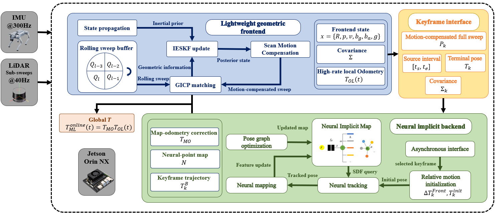
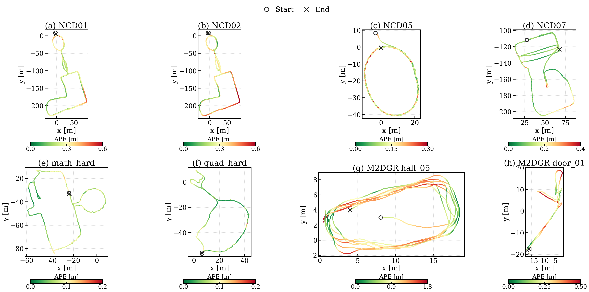
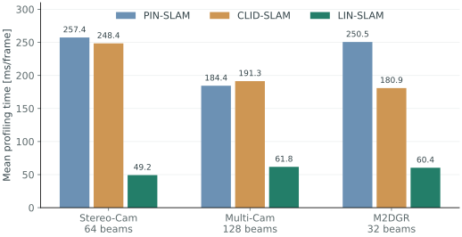
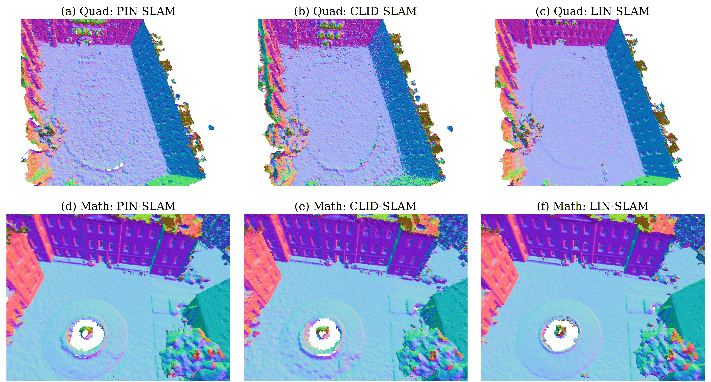

Lightweight LiDAR–inertial frontend
High-rate geometric estimation provides local motion, posterior-consistent scans, and uncertainty.
Submitted to IEEE RA-L
School of Automation Science and Electrical Engineering
Beihang University, Beijing, China
From local motion to a learned global map
High-rate LiDAR–inertial estimation with asynchronous neural tracking and mapping.
32-, 64-, and 128-channel LiDAR
Mean profiling time · Stereo-Cam
Continuous Corridor deployment
A frame is one complete physical LiDAR revolution. Workstation profiling time is not frontend output latency or Orin timing.
High-rate geometric estimation provides local motion, posterior-consistent scans, and uncertainty.
Fused C++/CUDA computation and bounded workloads support continual learning of a neural SDF.
Localization and neural mapping run together at the original sensor rate on an Orin NX.
The idea
Geometric light detection and ranging (LiDAR)–inertial simultaneous localization and mapping (SLAM) provides efficient state estimation but lacks the continuous map representation and global refinement capabilities of neural implicit SLAM, while neural implicit methods remain computationally expensive. We propose Lightweight LiDAR–Inertial Neural SLAM (LIN-SLAM), a hybrid method that couples high-rate geometric LiDAR–inertial estimation with neural implicit tracking, continual mapping, and global refinement for accurate real-time onboard SLAM. Experiments on twelve representative sequences from three datasets spanning 32-, 64-, and 128-channel LiDAR configurations show that LIN-SLAM achieves the lowest overall mean absolute trajectory error (ATE) among the evaluated state-of-the-art geometric and neural implicit methods, while substantially reducing runtime compared with existing neural implicit SLAM methods. On a Unitree Go2 equipped with an NVIDIA Jetson Orin NX and a 16-channel LiDAR, LIN-SLAM sustains real-time localization and neural mapping over a 1.47-km indoor trajectory through challenging repetitive corridor environments, with an endpoint closure error of only 0.141 m. To the best of our knowledge, LIN-SLAM is the first LiDAR–inertial SLAM system with a neural implicit backend to achieve real-time online operation on a mobile robotic platform while maintaining state-of-the-art localization accuracy. The code will be released upon acceptance.
Abstract reproduced from the submitted manuscript; resource availability is listed below.
How it works
The geometric frontend estimates motion while the neural backend refines poses and builds a continuous map.

High-rate geometry
Sub-sweeps and inertial measurements
Local motion, uncertainty and posterior-consistent scans
Continuous high-rate poses
Scan · source interval · terminal pose · covariance
Asynchronous neural backend
Frontend motion initializes tracking; uncertainty sets the first convergence check.
Neural-point features and an SDF decoder support continual mapping.
Accepted loop constraints drive pose-graph optimization and map updates.
Data-flow schematic, not an execution timeline. Pose uncertainty adjusts tracking effort; it does not add a pose-prior loss.
Evaluation
Paper results on 12 public sequences spanning 32-, 64-, and 128-channel LiDAR.

Translational ATE RMSE with rigid SE(3) alignment and no scale adjustment. Lower is better; bold indicates the best result.
| Sequence | PIN-SLAM | CLID-SLAM | FAST-LIO2 | Point-LIO | LIN-SLAM |
|---|---|---|---|---|---|
| Newer College Stereo-Cam · 64 beams | |||||
| NCD01 | 0.357 | 0.859 | 0.344 | 0.347 | 0.284 |
| NCD02 | 0.351 | 1.139 | 0.357 | 0.317 | 0.314 |
| NCD05 | 0.217 | 0.126 | 0.108 | 0.192 | 0.139 |
| NCD07 | 0.319 | 0.231 | 0.136 | 0.135 | 0.148 |
| Newer College Multi-Cam · 128 beams | |||||
| math_easy | 0.091 | 0.071 | 0.112 | 0.175 | 0.096 |
| math_medium | Fail | 0.115 | 0.115 | 0.117 | 0.141 |
| math_hard | Fail | 0.090 | 0.084 | 0.089 | 0.074 |
| quad_easy | 0.095 | 0.078 | 0.067 | 0.071 | 0.073 |
| quad_medium | Fail | 0.064 | 0.058 | 0.079 | 0.065 |
| quad_hard | 0.176 | 0.095 | 0.151 | 0.060 | 0.069 |
| M2DGR · 32 beams | |||||
| Hall05 | 1.031 | 1.182 | 1.159 | 1.158 | 1.005 |
| Door01 | 0.271 | 0.433 | 0.458 | 0.447 | 0.272 |
PIN-SLAM fails on three Multi-Cam sequences. Its dataset-group averages include successful runs only.
Workstation experiments use dual Intel Xeon Gold 6530 CPUs and an NVIDIA RTX 5090. One frame denotes one complete physical LiDAR revolution.

On Stereo-Cam, LIN-SLAM reduces mean profiling time by 80.9% relative to PIN-SLAM and 80.2% relative to CLID-SLAM.

| Scene / method | Accuracy [cm] ↓ | Completeness [cm] ↓ | Chamfer-L1 [cm] ↓ | F-score [%] ↑ |
|---|---|---|---|---|
| Quad | ||||
| PIN-SLAM | 10.768 | 20.346 | 15.557 | 79.08 |
| CLID-SLAM | 12.060 | 15.435 | 13.748 | 86.06 |
| LIN-SLAM | 8.940 | 13.684 | 11.312 | 87.84 |
| Math Institute | ||||
| PIN-SLAM | 16.659 | 17.126 | 16.892 | 81.66 |
| CLID-SLAM | 15.833 | 16.163 | 15.998 | 82.86 |
| LIN-SLAM | 14.523 | 15.455 | 14.989 | 85.31 |
Accuracy and completeness measure reconstruction-to-reference and reference-to-reconstruction distances; Chamfer-L1 averages the two. F-score combines precision and recall. All methods share the same evaluation settings.
The two implementations use identical NCD01 keyframes, initialization, samples, network architecture, replay data, and optimization settings.
| Metric | Tensor implementation | Optimized C++/CUDA |
|---|---|---|
| Tracking [ms] | 79.674 / 167.922 | 35.076 / 58.016 |
| Mapping [ms] | 130.901 / 139.378 | 29.545 / 31.890 |
| Backend total [ms] | 246.278 / 361.939 | 82.605 / 107.777 |
| Final ATE RMSE [m] | 0.2918 | 0.2835 |
Mean backend processing time is reduced by 66.5%. Times are measured per keyframe on the workstation, not as end-to-end pose latency.
Beyond the workstation
LIN-SLAM runs localization and neural mapping concurrently at the original 1× sensor rate on a Unitree Go2, equipped with a Jetson Orin NX and a 16-channel Hesai XT16.
Animated visualization of the final maps and PGO trajectories—not a live mapping recording.
CORRIDOR
BASEMENT
| Metric | Corridor | Basement |
|---|---|---|
| Endpoint closure error [m] | 0.141 | 0.073 |
| Profiling time per full revolution [ms] | 84.875 | 88.401 |
| Real-time operation | Yes | Yes |
Without external ground truth, we report endpoint closure error: the estimated start-to-end distance after returning to the start. This measures closure consistency, not trajectory-wide ATE. Results use the final globally corrected trajectories.
Explore & reproduce
Run the same SLAM pipeline on public datasets or a robot using the supplied sensor and platform profiles.
LIN-SLAM implementation, sequence configurations, and replay scripts.
Set up the environment, build LIN-SLAM, and run a complete sequence.
Prepare the recordings and ground truth, then run a dataset sequence.
Evaluate exported trajectories against the dataset ground truth.
Go2 / Jetson Orin NX installation, build, and live SLAM instructions.
Download the Corridor sequence (bag_08211) from Google Drive.
Download the original recordings and ground truth from Newer College (Stereo-Cam and Multi-Cam) and M2DGR. Follow the dataset setup guide above to replay the original bags.
See the robot-sequence replay guide for bag layout and one-command runs, and configuration and input for sensor topics and profiles.
@misc{che2026linslam,
title = {{LIN-SLAM}: Lightweight {LiDAR}-Inertial Neural {SLAM}
for Real-Time Onboard Navigation},
author = {Che, Shiqi and Liu, Yijie and Wang, Shuo and Liu, Wenxin},
year = {2026},
eprint = {2610.21199},
archivePrefix = {arXiv},
primaryClass = {cs.RO},
url = {https://arxiv.org/abs/2610.21199}
}